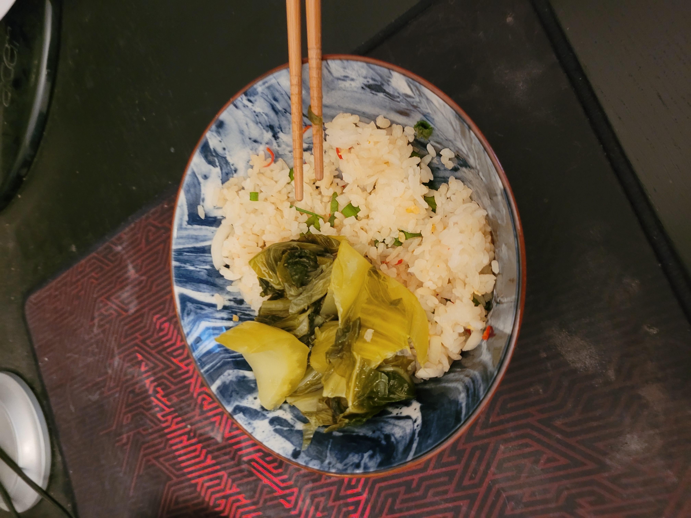

Rice Snack

Description
This quick and easy dish is comprised mainly of rice and whatever extras you have in the fridge. I prefer raw ingredients because I'm lazy and it brings the simplicity of the dish way down. The goal of this dish is to be fast, easy, and to help you empty your fridge of leftovers. Kimchi is a great topping for this, but I did not include any the time I made it in the picture.
Ingredients
- Rice (leftover is best)
- Pickled cabbage
- Kimchi
- Thai chile
- Onion
- Sesame seeds
- Scallions
- Nori furikake
- Seasoning sauce
- Literally anything else you want
Steps
- Chop the thai chile really small
- Mince the onion
- Chop up the scallions
- Heat up the leftover rice in the microwave
- Add the onions, thai chiles, scallions, furikake, sesame seeds, and a dash of seasoning sauce to the rice and mix it all together
- Add pickled cabbage and kimchi on top if desired
Back